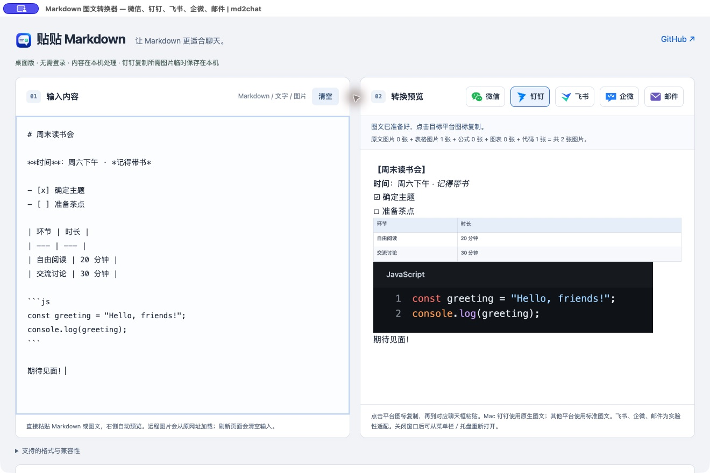

保留能编辑的文字
标题、列表、引用和强调转成适合聊天的内容。不是把整篇文章压成一张长图。
文字还是文字，表格变成清晰的图片。
把写好的内容，完整带进下一场对话。
开源 · 无需账号 · 本机处理
macOS / Windows · M 系列 Mac 已验证钉钉图文粘贴
# 周末读书会 一起读书，也聊聊新的想法。 | 环节 | 时长 | | --- | --- | | 自由阅读 | 20 分钟 | | 交流讨论 | 30 分钟 | **期待见面！**
周末读书会
一起读书，也聊聊新的想法。
| 环节 | 时长 |
|---|---|
| 自由阅读 | 20 分钟 |
| 交流讨论 | 30 分钟 |
期待见面！
在熟悉的左右栏里输入和预览。
让表达保持清楚，让复制更简单。
标题、列表、引用和强调转成适合聊天的内容。不是把整篇文章压成一张长图。
表格、彩色代码、数学公式和 Mermaid 图表转为图片，按照原文顺序与文字组合。
macOS 版直接写入钉钉原生图文格式。无需安装 Chrome 插件，也无需另开本机助手。
桌面应用实际界面。
示例中的表格和代码已转为图片，其他文字仍可编辑。

输入 Markdown，或粘贴文字和图片。
左右对照，确认表格、代码和原图都已准备好。
点击微信、钉钉、飞书、企微或邮件图标复制，发送前仍可修改普通文字。
不装运行环境，不开终端。
把现在的 md2chat，放到你的桌面。
关于这次测试版
安装包尚未完成平台开发者签名，macOS 也未公证。系统可能提示或阻止打开。
Windows 使用标准 HTML 图文，钉钉可能忽略图片，尚未适配 Windows 钉钉专有格式。Mac 原生图文已在 M 系列上实测；Intel Mac、微信及其他客户端仍需验证。
不想安装？继续使用网页版 ↗
网页版保留标准图文复制，但不能保证钉钉保留图片。
按目标平台复制，了解实际支持范围和图片排查方法。
解释钉钉粘贴 Markdown 和图文时图片丢失的原因，以及 md2chat 的 macOS 原生图文复制和 Windows、网页限制。
使用 md2chat 将 Markdown、彩色代码、公式和表格转换成微信图文，了解标准 HTML 复制的适用范围和图片排查步骤。
md2chat 各平台复制入口、原生与标准 HTML 的区别，以及飞书、企业微信、邮件尚未实测的兼容性边界。
了解 md2chat 如何处理 Markdown 标题、列表、链接、表格、语法高亮代码、LaTeX 数学公式及 Mermaid 流程图。
转换在本机完成，不要求登录，不向 md2chat 服务器上传正文或图片。远程原图仍会向其来源网站发起请求。桌面版会在本机缓存复制需要的图片，超过 7 天后启动时清理；当前剪贴板仍含钉钉图文时暂缓清理。
网页只能通过浏览器开放的剪贴板格式复制。桌面版可以直接写入 macOS 钉钉使用的图文结构，保留文字、图片和排列顺序，不需要把整篇内容转成 PNG。
桌面版为 macOS 钉钉提供原生图文格式，同时提供标准 HTML 和纯文字。不同客户端的粘贴规则不同，实际支持范围和测试记录请查看仓库兼容性说明。发送前请确认图片完整。
不需要。桌面应用包含转换界面和剪贴板写入能力。macOS 下载 DMG 后即可安装应用；正式签名版发布前，当前包仅供测试。
支持 macOS 菜单栏和 Windows 系统托盘。关闭窗口后继续驻留，在托盘菜单中打开窗口、勾选开机自启动或退出应用。自启动默认不主动开启；未签名的 macOS 包可能需要系统批准或无法注册。
项目采用 MIT 开源许可证。你可以免费使用、查看代码、反馈问题，也可以参与改进。下载与更新通过 GitHub Releases 发布。